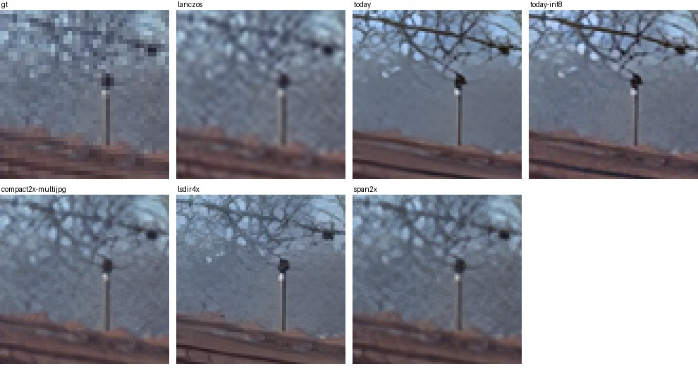
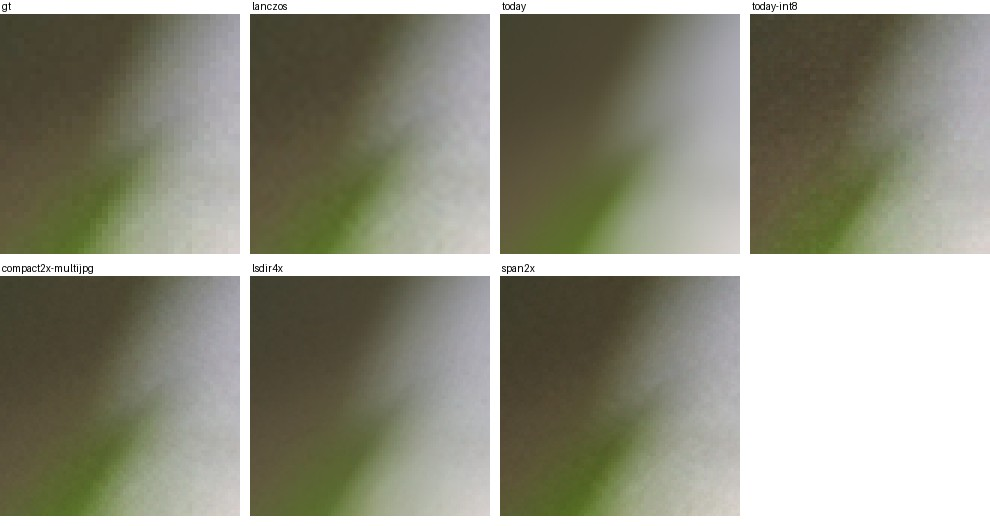
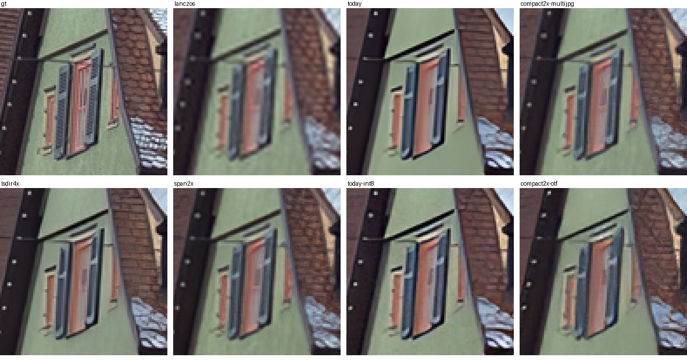
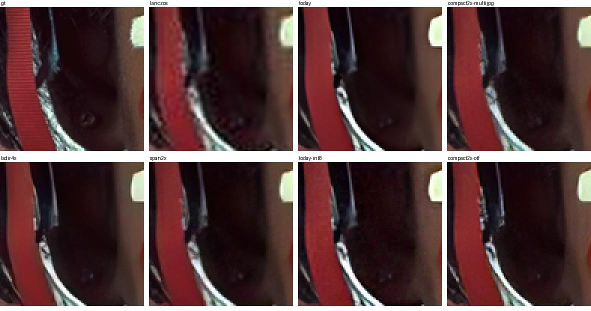

Research, 2026-10-25. The on-device model was run for real; numbers are measured unless a line says "estimate". No change to the app.
Open choice for you: step 1 changes Boost's look a little on flat areas (see the second crop). If that is not acceptable, go straight to step 2.
Boost runs Real-ESRGAN realesr-general-x4v3 (BSD-3-Clause): 32 layers of 64 channels, 1.2 million numbers, 4.9 MB. It works in 256 px tiles with 16 px overlap, always at 4×, and then brings the tile down for 2× and 3× (and 1× for Sharpen, which costs the same as a 4× Boost). Where there is no graphics card, the runner uses ONNX Runtime on the CPU with 2 threads.
On one Apple M2, CPU only (graphics chip and Neural Engine not used), a 256 px tile takes 1.87 s on one core, 0.97 s on the two the runner uses. A 12 MP photo at 2× (4200×2800 → 8400×5600, 247 tiles) took 280 s end to end, 442 MB of memory (measured with the real runner).
Stand-in. No Linux arm64 machine here, so the Mac's CPU stands in for one. An M2 core is roughly 3 to 4 times faster than a Raspberry Pi 5 core (public single-core benchmarks; my estimate, not measured), and about the same as a Linux VM on an M-series Mac, Asahi, or a recent Snapdragon laptop. x64 was not measured: there was no x64 Linux CPU to hand, so the x64 "without Vulkan" row is expected to follow the same pattern but is unproven.
Milliseconds, median of five. The ONNX Runtime rows use the onnxruntime-node 1.23.2 that Forge ships. The "12 MP model time" column is tiles × the 4-thread figure (model only; the runner adds about 35 s for resizing and writing a 47 MP PNG).
| Model, program | 1 thread | 2 threads | 4 threads | 12 MP model time (4 thr) | Memory |
|---|---|---|---|---|---|
| Today's model, ONNX Runtime (as shipped) | 1871 | 971 | 566 | 140 s | 262 MB |
| Today's model, int8, ONNX Runtime | 534 | 289 | 182 | 45 s | 252 MB |
| Today's model, ncnn | 578 | – | 232 | 57 s | 276 MB |
| Today's model, ncnn, half-precision maths1 | – | – | 118 | 29 s | 199 MB |
| Today's model, MNN (half precision: 310) | 697 | – | 351 | 87 s | 194 MB |
| Today's model, OpenVINO (ARM plugin) | 1656 | – | 507 | 125 s | 2.5 GB |
| Compact 2× model (16 layers), ONNX Runtime / ncnn / ncnn half | 930 / 287 | 490 / – | 290 / 114 / 60 | 72 / 28 / 15 s | 183 MB |
| Compact 4× model (16 layers), ONNX Runtime / ncnn / ncnn half | 1036 / 299 | 530 / – | 293 / 119 / 64 | 72 / 29 / 16 s | 257 MB |
| SPAN 2× model, ONNX Runtime / ncnn / ncnn half | 698 / 263 | 384 / – | 247 / 122 / 63 | 61 / 30 / 16 s | 333 MB |
1 Half-precision arithmetic needs an ARMv8.2 CPU (Raspberry Pi 5, Graviton 2+, Apple, Snapdragon). Output stayed within 50 dB of full precision (below). Pi 4 and older do not have it and use the full-precision row.
| Setup | Time | Memory | Output against today's |
|---|---|---|---|
| Today's runner on its CPU path (2 threads) | 280 s | 442 MB | – |
| Same model as int8, 4 threads | 79 s | 432 MB | 34.1 dB, SSIM 0.92 |
| ncnn, half precision, 4 threads (estimate: tiles 29 s + the same ~35 s of resizing and writing) | ≈ 65 s | ≈ 250 MB | 50 dB (see next) |
On a Raspberry Pi 5 (4 cores) multiply by roughly 3.5 (estimate): today's runner about 16 min, int8 about 4½ min, ncnn half precision about 4 min (2 to 3 if the resizing and writing are trimmed too). After the model gets faster, the next cost is the JavaScript resizing and PNG writing (35 s here), which is easy to cut.
Two tests. Clean: each Kodak photo (768×512, 24 of them) halved with Lanczos, then boosted 2× and compared with the original. JPEG: same, but the half-size copy is saved as JPEG quality 70 first (12 photos), which is closer to a phone photo that went through a chat app. Higher PSNR and SSIM are better; lower LPIPS (a measure of how different two pictures look to a person) is better. "Against today's" says how close an option is to what Boost makes now.
| Option | Clean: PSNR / SSIM vs original | JPEG: PSNR / SSIM / LPIPS vs original | JPEG: vs today's PSNR / LPIPS |
|---|---|---|---|
| Plain Lanczos 2× (no model) | 29.63 / 0.880 | 27.72 / 0.802 / 0.342 | 27.7 / 0.266 |
| Today's Boost | 27.61 / 0.843 | 26.38 / 0.794 / 0.227 | – |
| Today's, ncnn half precision | 27.60 / 0.842 | 26.38 / 0.794 / 0.226 | 49.8 / 0.001 |
| Today's, int8 | 27.29 / 0.814 | 26.22 / 0.767 / 0.187 | 35.7 / 0.083 |
| Compact 4× (LSDIR v2) | 28.66 / 0.853 | 27.17 / 0.791 / 0.198 | 30.4 / 0.077 |
| Compact 2× (NomosUni multijpg) | 29.65 / 0.872 | 27.75 / 0.792 / 0.151 | 29.0 / 0.132 |
| SPAN 2× (NomosUni multijpg) | 28.04 / 0.869 | 26.41 / 0.793 / 0.174 | 27.8 / 0.119 |
Also tried and worse: NomosUni compact "otf-medium" (27.2 / 0.811 clean) and ParimgCompact (26.5 / 0.792 clean). The clean-test numbers were made before LPIPS was added; the JPEG run has all three. Today's model is trained to sharpen and invent detail, so on a clean half-size copy it scores below plain Lanczos on PSNR. That is expected: PSNR rewards staying close to blurry, not looking crisp. Read the crops, not only the numbers.




| Option | Size, licence | Needs | Covers | Build / CI cost | Verdict |
|---|---|---|---|---|---|
| Use every core on the CPU path (ONNX Runtime) | no change | nothing | both chips | two lines in runner.ts; an ETA on the working screen | Do. 2→4 threads is 1.7× on the M2 (more cores, more gain; efficiency cores did not help). |
| int8 copy of today's model (ONNX Runtime) | 1.3 MB (today 4.9 MB); BSD-3-Clause | CPU with 8-bit dot products (Pi 4 has none; Pi 5 and everything newer do; x64 with AVX2) | both chips; Linux arm64 gets a payload like x64's | quantize once offline (script in scripts/), pin its sha beside model.json; no new CI step | Do, if a small look change is acceptable (3.5× faster). Untested on x64: older x64 CPUs without VNNI need the quantizer's "reduce range" option, and I could not check that here. |
| ncnn (CPU and Vulkan in one program) | about 4 MB zipped with Vulkan (the upstream x64 zip is 3.7 MB), about 2 MB without; model 2.4 MB; ncnn BSD-3-Clause, model BSD-3-Clause | nothing for the CPU; a Vulkan driver only for the GPU path (ncnn loads it itself, no SDK) | both chips, CPU and GPU | no ready Linux arm64 download (ncnn releases and Real-ESRGAN-ncnn-vulkan have x64 only), so cross-build it like the whisper extension (zig), plus a small C++ runner that does tiles. A few days. | Best result. Same output, 2.4 to 4.7× faster than ONNX Runtime at equal cores, and one program for CPU and GPU on Linux. |
| Compact models (16 layers, or SPAN) | 2.4 / 1.7 MB; CC-BY-4.0 (credit needed) | – | both | conversion script, new model pin | Half the work, but a softer look on real photos (the first and third crops) and not the same product. A choice for later, not for now. |
| OpenVINO (Node package) | Linux arm64 runtime 26 MB, x64 56 MB; Apache-2.0 | – | Intel CPU/GPU; ARM CPU | download at install | No: slower than ncnn on ARM (507 ms, half precision 368) and 2.5 GB of memory. |
| MNN | Apache-2.0 | – | – | no Linux arm64 download (x64 only), build it like ncnn | No: 1.5 to 2.6× slower than ncnn here. |
| TFLite / LiteRT (XNNPACK, GPU delegate) | Apache-2.0 | – | – | ONNX→TFLite conversion is heavy; no official Node binding | Not measured. Same class as ncnn with more work. |
| ONNX Runtime XNNPACK / ACL / ArmNN | MIT | – | – | custom ONNX Runtime build per chip | No: the shipped build says "backend not found" for all three (tested). |
| Bigger tiles | – | – | – | – | No gain: ncnn 384 px and 512 px tiles cost more per pixel than 256 (2.6 and 2.1 µs/px against 1.8). |
| What the desktop already has | – | – | – | – | Nothing. Linux has no system upscaler. ffmpeg's neural filters need a build with TensorFlow, OpenVINO or LibTorch, which the ffmpeg a user has will not be; the old sr filter is a small research model from 2018. A plain Lanczos "resize" Forge already has. |
boost-linux-options-2026-10/.